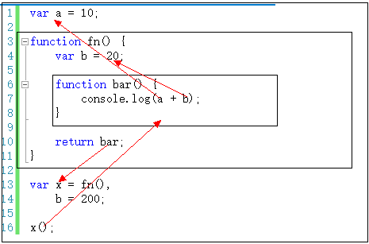
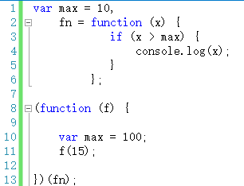
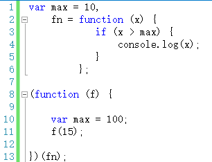

关于JS原型的笔记
*想法：首先理清楚JS中有哪些类型，关键了解函数与对象的关系，再去探索原型
typeof
javascript中一个常用的运算符——typeof，typeof可以输出的类型有：值类型包括四种（undefined, number, string, boolean），还有引用类型（函数，数组（输出object），对象）
一切引用类型都是对象，对象是若干属性的集合
判断一个变量类型：值类型的类型判断用typeof，引用类型的类型判断用instanceof
函数与对象的关系
函数是引用类型，那么函数是一种对象。而对象其实都是由函数创建的。
var obj = { a: 10, b: 20 };//有这么一种创建对象的简便方式，其实本质上如下：
var obj = new Object();
obj.a = 10;
obj.b = 20;
而Object()是一个函数，因此对象是由函数创建的。
以上得出重点笔记：函数是一种对象,对象其实都是由函数创建的
*想法：先理清原型和隐式原型是什么，知道概念之后把关系图画出来理清之间的关系
原型prototype与隐式原型__proto__
prototype概念：上文已经知道函数是一种对象，即是属性的集合，其实prototype就是函数的一个属性，而这个属性又是特别的，它本身是一个对象。
既然，函数的prototype属性是一个对象，那么它也有一个默认的constructor的属性，指向这个函数本身。
 如图，Object()是一个函数，Object.prototype是一个对象。
如图，Object()是一个函数，Object.prototype是一个对象。
__proto__概念：每个对象都有一个__proto__，这个__proto__是一个隐藏的属性。__proto__指向创建该对象的函数的prototype,但是Object.prototype却是一个特例——它的__proto__指向的是null，切记切记！
函数都是由Function创建的，因此函数的__proto__指向Function.prototype,需要注意的是：Function是被自身创建的。所以它的__proto__指向了自身的Prototype
有了以上的概念，可以画出以下一张关系图:

图片解析：
f1,f2,o1,o2是被函数Foo()、Object() new出来的对象，它们的__proto__分别指向创建它们的函数的prototype。
函数Foo()、Object()、Function()本身也是对象，它们__proto__指向创建它们的函数Function的prototype
Function.prototype是一个对象，因此它的__proto__指向创建对象的函数Object()的prototype
Object.prototype却是一个特例——它的__proto__指向的是null，切记切记！
*补充：理清instanceof的规则
instanceof
Instanceof运算符的第一个变量是一个对象，暂时称为A；第二个变量一般是一个函数，暂时称为B。
Instanceof的判断规则是：沿着A的__proto__这条线来找，匹配不上就继续往上层继续找，如果找到一个对象是B.prototype,那么就返回true。如果找到终点还未重合，则返回false。
执行上下文
变量、函数表达式——变量声明，默认赋值为undefined；
this——赋值；
函数声明——赋值；
如果代码段是函数体：则还有参数--赋值，arguments--赋值，自由变量的取值作用域--赋值
这些准备情况我们称之为“执行上下文”或者“执行上下文环境”。
注意点：函数每被调用一次，都会产生一个新的执行上下文环境。
this
在函数中this到底取何值，是在函数真正被调用执行的时候确定的，函数定义的时候确定不了。因为this的取值是执行上下文环境的一部分，每次调用函数，都会产生一个新的执行上下文环境。
var name = "The Window";
var object = {
name : "My Object",
getNameFunc : function(){
return function(){
return this.name;
};
}
};
alert(object.getNameFunc()());
第一：执行object.getNameFunc()是返回一个函数，然后再执行这个函数，是在window下调用的。
var name = "The Window";
var object = {
name : "My Object",
getNameFunc : function(){
var that = this;
return function(){
return that.name;
};
}
};
alert(object.getNameFunc()());
第二：执行object.getNameFunc()时，函数里面的this是指向object对象（也就是第三种情况），赋值给that，即that是指向object。
var name = "The Window";
var object = {
name : "My Object",
getNameFunc : function(){
return this.name;
}
};
alert(object.getNameFunc());
第三：见第二分析
var name = "The Window";
var object = {
name : "My Object",
getNameFunc : function(){
return this.name;
}
};
var f=object.getNameFunc;
console.log(f());
第四：把对象的属性赋值给f，运行f()时候其实是在window环境下，this指向window。
自由变量
在A作用域中使用的变量x，却没有在A作用域中声明（即在其他作用域中声明的），对于A作用域来说，x就是一个自由变量
注意点：函数在定义的时候（不是调用的时候），就已经确定了函数体内部自由变量的作用域,javascript除了全局作用域之外，只有函数可以创建作用域。 要到创建这个函数的那个作用域中取值——是“创建”，而不是“调用”，切记切记

闭包
1.可以读取函数内部的变量。
2.让这些变量的值保持在内存中。
一种是函数作为返回值，一种是函数作为参数被传递
 11行返回bar函数，12行执行bar()时max要到创建bar函数的作用域（即fn（）,如果找不到，再到创建fn函数的作用域）中寻找。同理，执行f(15)时，max变量的取值是10，而不是100。
11行返回bar函数，12行执行bar()时max要到创建bar函数的作用域（即fn（）,如果找不到，再到创建fn函数的作用域）中寻找。同理，执行f(15)时，max变量的取值是10，而不是100。
*想法：通过关系图，理解原型链
继承
访问一个对象的属性时，先在基本属性中查找，如果没有，再沿着__proto__这条链向上找，这就是原型链。
Object.create(Person.prototype)创建一个空对象，该对象的__proto__指向Person.prototype。
那么Student() new出来的对象,例如stu1，就有stu1.__proto__指向Student.prototype,往上指向Person.prototype，就有了相应一些方法，完成继承。
Person.call(this,name,age)则是调用Person函数，并且把执行上下文指向第一个参数“this”，即new出来的学生对象。
*补充：
1.改变Studeng.prototype的属性值，对已经new出来的对象生效。
2.改变Studeng.prototype=新对象，对已经new出来的对象不生效，新new出来的对象生效。
对象的属性
查找对象的属性
Object.getOwnPropertyDescriptor({pro:true},'pro');
//Object{value: true值, writable: true可修改, enumerable: true可枚举, configurable: true可删除}
创建对象的属性
创建单个属性
var person={};
Object.defineProperty(person,'name',{
configurable:false,writable:false,enumerable:true,value:'AAA'
});
创建多个属性
var person={};
Object.defineProperties(person,{
title:{...}，
crop:{...},
});